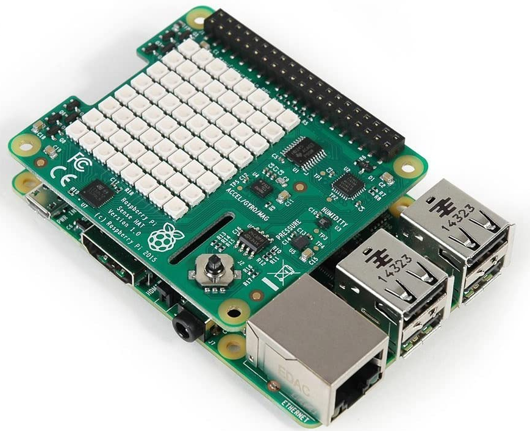
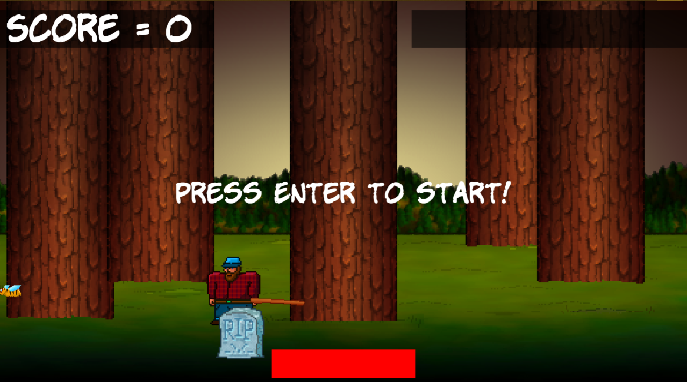
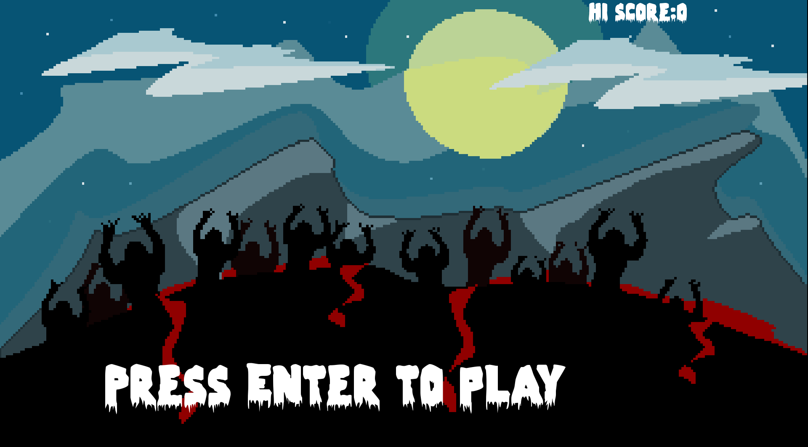
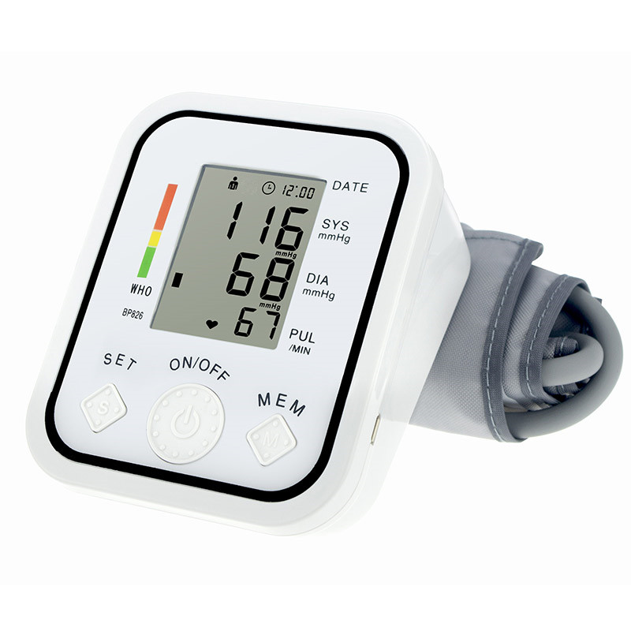

Shyama Sastha
Full-stack Engineer + ML/TinyML Enthusiast
As a Full-stack Engineer with a background in Computer Systems and IoT, I create, deploy, and deliver modular and scalable solutions on various cloud platforms. As a ML enthusiast, I learn and test out various ML/TinyML concepts through online course and open source projects/contributions.
I am passionate about building solutions/products that have low power requirements and longlasting lifetime.
Work Experience
Professional software development/testing experience in a Acoustics company and a cloud solutions company spanning 2 years. Content development expiernce of over a year on various e-learning platforms for various institutions and organizations.
See my complete work history on LinkedIn.
Programmer Analyst
Saras, Inc.
Dec 2019 - Present
As a Full-stack cloud developer, designed, deployed, and analysed various applications and REST APIs.
- Improved performance of applications by 10% through optimizing cloud data usage and creating efficient REST APIs with python and Django framework
- Developed a traffic monitoring feature for the APIs using supervised learning for classification on the percentage of API usage for different end points throughout a day
Product Security Engineer Co-op
Bose Corporation
Jan 2019 - June 2019
As a part of product security team, worked on various projects related to securing the product on various fronts.
- Secured product builds by creating an automation test suite for the CI/CD pipeline to determine and eliminate exposed network and embedded software vulnerabilities in smart sound systems in the home entertainment space
- Created a proactive analysis feature through adaptive learning of network vulnerabilities to implement in the pipeline
- Saved recall costs on millions of smart sound systems by evaluating it’s timing attack prone model to mitigate issues and helped secure the same by obtaining secure code fixes
Academic Author
Ansrsource
May 2016 - June 2017
As a core member of the digital media team, designed, developed, and ideated content for various cloud/e-learning requirements.
- Designed a few instructional content for various projects for the development of e-learning content using a decision tree based on various factors
- Increased productivity by 50% for various projects by mentoring new teams on related software through an adaptive learning methods based on individual requirements
Trainee Engineer
CVRDE
Jun 2015
Learnt about the functions and workings of various subdivisions in Research and Development of the CVRDE and the components with its operation on various defense technology development for Armored Combat Vehicles
Featured Projects
View selected projects below. More information can be found at shyamsastha.github.io.
Air Quality Monitoring and Control System

A full-scale IoT project to showcase various components involved in a complete IoT Solution.
The goal of the project is to create a functioning IoT solution for remote monitoring and control of a household environment.
IoT ProjectPerformance Characterization of Jetson Xavier

A Deep learning Effectiveness/Performance Characterization project for the Nvidia Jetson Xavier SoM.
The goal of the project is to characterize the performance of various processing components present on the Nvidia Jetson Xavier SoM.
Deep LearningTimber Game

A small project to create a simple game with C++ and SFML.
The goal of the project is to create a functioning game that works solely based on keyboard inputs and proper visuals.
TimberZombieArena Game

An advanced project to include mechanics such as clicking, reloading, refreshing based on levels.
The goal of the project is to create a functioning game that works with keyboard inputs, mouse clicks, positioning and based on level changes.
ZombieArenaMan-in-the-Middle attack on Philips Hue
A project to test the effectiveness of security between various communication components in a Philips Hue wirles lighting system.
The goal of the project is to establish the level of security problems in Philips Hue lighting system or a lack thereof.
Effect of Tempo of Music on Heart-rate while Exercising

A project to find the corelation between tempo of music listened to and heart rate while exercising.
The goal of the project is to establish a corelation between music tempo and heart rate while doing a cardio exercise.
Networking Design
A project to setup a network for a corporation that spans over various countries.
The goal of the project is to setup a network for a given corporation, using cisco packet tracer.
Education
Northeastern University - Boston
Master of Science in Computer Systems Enginering - Internet of Things specialization, Sep 2017 - Aug 2019
Over the course of two years, learned, and worked on various concepts pertaining to an entire IoT Stack - Embedded development, networking, wireless protocols, cloud, front-end development, back-end development, data analytics, machine learning, sensors/actuators design/implementation/control.
SASTRA University - Thanjavur
Bachelor of Technology in Electronics and Instrumentation Engineering, June 2012 - May 2016
As an undergraduate pursuing an engineering degree in Electronics and Insturmentation, I learned and worked on concepts pertaining to Digital Electronics, Microprocessors/Microcontrollers, Digital signal processing, Constrol systems, Industrial Engineering, Robotics and automation, etc. For my final project under Prof. Uma, I worked on developing a prototype of an economic oil quality sensing instrument.